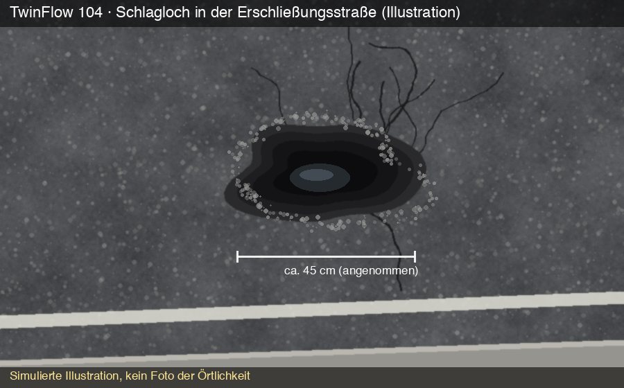

| Zuständige Stellen | Integrierte Stadtentwicklung und regionale Kooperation Statistik und Wahlen (101.32) |
| Abstandsregel | Mitte der Ausdehnung des Geltungsbereichs |
| Koordinaten | 51.229978, 7.226059 Geoportal · OSM |
| Projektbereich | pb-86ab590c Nummer: 9-0211-0 · Gemarkung: Ronsdorf · Flur: 69 |
| Datenangebot | 2 Datensätze |
Das Vorhaben ist in das gesamtstädtische Stadtentwicklungsgefüge einzuordnen. Zu prüfen sind die Lage zu den Zentralen Versorgungsbereichen (2020) sowie die Wirkung auf Nahversorgung und Einzelhandel. Der Gebäude- und Wohnungsbestand dient als Bedarfsgrundlage; Dichte, Wohnungsmix und Gebietscharakter sollen sich am Umfeld orientieren.
Generische Beispiel-Stellungnahme, die zu jeder Bebauung passen soll. Keine Aussage des Ressorts.
| Datensatz | Herausgeber | Formate | Lizenz |
|---|---|---|---|
| Zentrale Versorgungsbereiche Wuppertal (2020) | Integrierte Stadtentwicklung und regionale Kooperation | ATOM, GEOJSON, KML, SHP, XML | CC BY 4.0 |
| Gebäude- und Wohnungsbestand Wuppertal am Jahresende | Statistik und Wahlen | CSV, HTML | CC BY 4.0 |
Beitrag zum Planungsprozess: Einordnung des Vorhabens in die gesamtstädtische Stadtentwicklung und die Zentralen Versorgungsbereiche (Einzelhandel, Nahversorgung) · Bestandsstatistik zu Gebäuden und Wohnungen als Planungsgrundlage
| Zuständige Stellen | Liegenschaftskataster (102.2101) Auszüge Planungsrechtskataster / Planungsrechtskarten (102.13) Stadtkartographie (102.3201) Raumbezogene Informationsverarbeitung Geschäftsstelle Gutachterausschuss (102.01) Geodatenzentrum |
| Abstandsregel | 20 % der Ost-West-Ausdehnung westlich der Mitte |
| Koordinaten | 51.229978, 7.224323 Geoportal · OSM |
| Projektbereich | pb-86ab590c Nummer: 9-0211-0 · Gemarkung: Ronsdorf · Flur: 69 |
| Datenangebot | 17 Datensätze |
Vor Planungsbeginn sind Flurstücksgrenzen, Gebäudebestand und tatsächliche Nutzung aus dem Liegenschaftskataster (ALKIS) zu prüfen. Für den Bauantrag wird ein Amtlicher Lageplan benötigt; Teilungen und Zusammenlegungen sind als Fortführungsvermessung rechtzeitig zu beantragen. Das geltende Planungsrecht (Bebauungsplan, Flächennutzungsplan, Satzungen) ist über die Auszüge Planungsrecht zu klären, Baulasten und Dienstbarkeiten über das Baulastenverzeichnis.
Generische Beispiel-Stellungnahme, die zu jeder Bebauung passen soll. Keine Aussage des Ressorts.
| Datensatz | Herausgeber | Formate | Lizenz |
|---|---|---|---|
| ALKIS-Flurstücke Wuppertal | Liegenschaftskataster | ATOM, GEOJSON, KML, SHP, XML | dl-de/zero |
| ALKIS-Gebäude Wuppertal | Liegenschaftskataster | ATOM, GEOJSON, HTML, KML, SHP, XML | dl-de/zero |
| ALKIS Tatsächliche Nutzung Wuppertal | Stadttopografie, Grundlagenkarten | ATOM, GEOJSON, HTML, KML, PDF, SHP, XML | dl-de/zero |
| Rechtsverbindliche Bebauungspläne Wuppertal | Auszüge Planungsrechtskataster | ATOM, GEOJSON, HTML, KML, SHP, XML | CC BY-ND 4.0 |
| Laufende Bebauungsplanverfahren Wuppertal | Auszüge Planungsrechtskataster | ATOM, GEOJSON, HTML, KML, SHP, XML | CC BY-ND 4.0 |
| XPlanung FNP Wuppertal fortlaufend aktualisiert | Planungsrechtskarten | ATOM, GML, XML | CC BY-ND 4.0 |
| FNP-Hauptnutzungen Wuppertal | Planungsrechtskarten | ATOM, GEOJSON, HTML, KML, SHP, XML | CC BY-ND 4.0 |
| Rechtsverbindliche Erhaltungs- und Gestaltungssatzungen Wuppertal | JSON, KML, ZIP | siehe Datensatz | |
| Rechtsverbindliche Innenbereichssatzungen Wuppertal | Planungsrechtskarten | ATOM, GEOJSON, HTML, KML, SHP, XML | CC BY-ND 4.0 |
| Landschaftsschutzgebiete Wuppertal | Planungsrechtskarten | ATOM, GEOJSON, KML, SHP, XML | CC BY-ND 4.0 |
| Naturschutzgebiete Wuppertal | Planungsrechtskarten | ATOM, GEOJSON, KML, SHP, XML | CC BY-ND 4.0 |
| Georeferenzierte Bestandsadressen Wuppertal | JSON, ZIP | dl-de/zero | |
| Straßenverzeichnis Wuppertal | Raumbezogene Informationsverarbeitung | ZIP | CC BY 4.0 |
| Grundstücksmarktberichte Wuppertal | Geschäftsstelle Gutachterausschuss | ATOM, HTML, PDF, XML | dl-de/zero |
| Wohngebäude-Baujahre Wuppertal | Raumbezogene Informationsverarbeitung | ATOM, CSV, GEOJSON, KML, SHP, XML | CC BY 4.0 |
| Nichtwohngebäude-Baujahre Wuppertal | Raumbezogene Informationsverarbeitung | ATOM, CSV, GEOJSON, KML, SHP, XML | CC BY 4.0 |
| Höhenlinien Wuppertal 2020 Herausgeber Geobasis NRW | Geobasis NRW | ATOM, GEOJSON, HTML, KML, SHP, XML, ZIP | CC BY 4.0 |
Beitrag zum Planungsprozess: Amtliche Grundlagen: Flurstücke, Gebäude und tatsächliche Nutzung (ALKIS), Adressen, Straßenverzeichnis, Stadtkarten · Planungsrecht: Bebauungspläne (rechtsverbindlich und laufend), Flächennutzungsplan, Satzungen, Schutzgebiete; Auszüge Planungsrecht · Vermessung: Amtlicher Lageplan, Fortführungsvermessungen, Grenzniederschrift (Leistungen laut wuppertal.de) · Baulasten und Dienstbarkeiten (Auszüge Baulastenverzeichnis) · Grundstücksmarkt: Grundstücksmarktberichte der Geschäftsstelle Gutachterausschuss · Geodatenzentrum als Anlaufstelle für Abgabe und Verkauf von Geodaten
| Zuständige Stellen | Freiraumentwicklung und Stadtökologie (103.12) Stadtbaummanagement |
| Abstandsregel | 20 % der Ost-West-Ausdehnung östlich der Mitte |
| Koordinaten | 51.229978, 7.227795 Geoportal · OSM |
| Projektbereich | pb-86ab590c Nummer: 9-0211-0 · Gemarkung: Ronsdorf · Flur: 69 |
| Datenangebot | 3 Datensätze |
Der vorhandene Baumbestand (Stammpositionen und Kronen) ist zu erfassen und im Entwurf zu berücksichtigen; Erhalt hat Vorrang, Ersatzpflanzungen sind einzuplanen. Im Umfeld liegende Kleingartenanlagen und Grünflächen sind bei Erschließung und Baustellenlogistik zu schonen. Grünstreifen und Hecken im Entwurf sollen standortgerecht bepflanzt werden.
Generische Beispiel-Stellungnahme, die zu jeder Bebauung passen soll. Keine Aussage des Ressorts.
| Datensatz | Herausgeber | Formate | Lizenz |
|---|---|---|---|
| Kleingartenanlagen Wuppertal | Freiraumentwicklung und Stadtökologie | ATOM, GEOJSON, HTML, KML, SHP, XML | CC BY 4.0 |
| Manuell erfasste Einzelbaum Stammpositionen in einigen Wuppertaler Parkanlagen | ZIP | siehe Datensatz | |
| Einzelbaum Kronenumringe aus Luftbildern (2021) Wuppertal Herausgeber EFTAS, über Geodaten bereitgestellt | EFTAS Fernerkundung Technologietransfer GmbH aus Münster | ATOM, GPKG, HTML, XML | CC BY 4.0 |
Beitrag zum Planungsprozess: Freiraum im Umfeld: Kleingartenanlagen und Grünflächen · Baumbestand (Standorte und Kronen) für Baumschutz und Pflanzkonzepte
| Zuständige Stellen | Straßen und Verkehrsplanung (104.5) Nahmobilität (104.54) Öffentliche Beleuchtung (104.25) Gesamtverkehrsplanung und ÖPNV-Aufgabenträger Nahverkehrsplanung Parkausweise und Ausnahmegenehmigung Fahrverbote |
| Abstandsregel | 20 % der Nord-Süd-Ausdehnung nördlich der Mitte |
| Lage | auf die nächstgelegene Stelle innerhalb des Geltungsbereichs verschoben (ca. 35 m) |
| Koordinaten | 51.230931, 7.226059 Geoportal · OSM |
| Projektbereich | pb-86ab590c Nummer: 9-0211-0 · Gemarkung: Ronsdorf · Flur: 69 |
| Datenangebot | 11 Datensätze |
Die Erschließung ist an das öffentliche Straßennetz anzubinden; im Umfeld gelten Tempo-30-Zonen. Das Stellplatzkonzept ist mit den Bewohnerparkzonen und City-Parkzonen abzustimmen, Radabstellanlagen und die ÖPNV-Anbindung (Park and Ride, Bike and Ride, Nahverkehrsplan) sind einzubeziehen. Die vorhandene Straßenbeleuchtung ist zu berücksichtigen. Bei der Bestandsaufnahme der Erschließungsstraße wurden Fahrbahnschäden festgestellt (siehe Illustration, Schlagloch): Die Instandsetzung ist vor Baubeginn zu klären, der Zustand vor dem Baustellenverkehr per Beweissicherung zu dokumentieren.
Generische Beispiel-Stellungnahme, die zu jeder Bebauung passen soll. Keine Aussage des Ressorts.

Illustration (simuliert), kein Foto der Örtlichkeit
| Datensatz | Herausgeber | Formate | Lizenz |
|---|---|---|---|
| Bewohnerparkzonen Wuppertal | Parkausweise und Ausnahmegenehmigung Fahrverbote | ATOM, GEOJSON, HTML, KML, SHP, XML | CC BY 4.0 |
| Bewohnerparkbereiche Wuppertal | Parkausweise und Ausnahmegenehmigung Fahrverbote | ATOM, GEOJSON, HTML, KML, SHP, XML | CC BY 4.0 |
| City-Parkflächen Wuppertal | Parkausweise und Ausnahmegenehmigung Fahrverbote | ATOM, GEOJSON, HTML, KML, SHP, XML | CC BY 4.0 |
| City-Parkzonen Wuppertal | JSON, ZIP | siehe Datensatz | |
| Park and Ride Anlagen Wuppertal | Gesamtverkehrsplanung und ÖPNV-Aufgabenträgerschaft | ATOM, GEOJSON, HTML, KML, SHP, XML | CC BY 4.0 |
| Bike and Ride Anlagen Wuppertal | JSON, ZIP | siehe Datensatz | |
| Radabstellanlagen Wuppertal | Nahmobilität | ATOM, GEOJSON, KML, SHP, XML | CC BY 4.0 |
| Straßenbeleuchtung 2021 | Öffentliche Beleuchtung | XLSX | CC BY 4.0 |
| Tempo-30-Zonen Wuppertal (Flächen) | Straßen und Verkehrsplanung | ATOM, GEOJSON, KML, SHP, XML | CC BY 4.0 |
| Tempo-30-Zonen Wuppertal (Beschilderung) | Straßen und Verkehrsplanung | ATOM, GEOJSON, KML, SHP, XML | CC BY 4.0 |
| Bürgerbeteiligung zur Fortschreibung des Wuppertaler Nahverkehrsplans | Nahverkehrsplanung und ÖPNV-Aufgabenträgerschaft | XLS | CC BY 4.0 |
Beitrag zum Planungsprozess: Erschließung und Verkehrsberuhigung: Tempo-30-Zonen · Parken: Bewohnerparkzonen und -bereiche, City-Parkflächen und -zonen für das Stellplatzkonzept · ÖPNV und Multimodalität: Park and Ride, Bike and Ride, Nahverkehrsplan mit Bürgerbeteiligung · Radverkehr: Radabstellanlagen · Öffentliche Beleuchtung: Bestand der Straßenbeleuchtung
| Zuständige Stellen | Denkmalschutz und Denkmalpflege (105.03) Bauordnungsbehörde |
| Abstandsregel | 20 % der Nord-Süd-Ausdehnung südlich der Mitte |
| Koordinaten | 51.228708, 7.226059 Geoportal · OSM |
| Projektbereich | pb-86ab590c Nummer: 9-0211-0 · Gemarkung: Ronsdorf · Flur: 69 |
| Datenangebot | 3 Datensätze |
Das Vorhaben bedarf der Baugenehmigung; die Bauvorlagen sind vollständig einzureichen. Im Umfeld sind Baudenkmäler und Denkmalbereichssatzungen (rechtsverbindlich und nicht rechtsverbindlich) auf Umgebungsschutz zu prüfen; Erhaltungs- und Gestaltungssatzungen können Anforderungen an die Gestaltung stellen. Nach Fertigstellung meldet die Bauordnungsbehörde die Gebäudedaten an Ressort 102 zur Gebäudeeinmessung.
Generische Beispiel-Stellungnahme, die zu jeder Bebauung passen soll. Keine Aussage des Ressorts.
| Datensatz | Herausgeber | Formate | Lizenz |
|---|---|---|---|
| Baudenkmäler Wuppertal | Denkmalschutz und Denkmalpflege | ATOM, GEOJSON, KML, SHP, XML | CC BY-ND 4.0 |
| Rechtsverbindliche Denkmalbereichssatzungen Wuppertal | Denkmalschutz und Denkmalpflege | ATOM, GEOJSON, KML, SHP, XML | CC BY-ND 4.0 |
| Nicht rechtsverbindliche Denkmalbereichssatzungen Wuppertal | Denkmalschutz und Denkmalpflege | ATOM, GEOJSON, KML, SHP, XML | CC BY-ND 4.0 |
Beitrag zum Planungsprozess: Denkmalschutz: Baudenkmäler und Denkmalbereichssatzungen (rechtsverbindlich und nicht rechtsverbindlich) im Umfeld · Bauordnung: Baugenehmigungsverfahren; nach Fertigstellung meldet die Bauordnungsbehörde die Gebäudedaten an Ressort 102 (Gebäudeeinmessung)
| Zuständige Stellen | Untere Immissionsschutz- und Abfallwirtschaftsbehörde Landschaftsplanung und -pflege, Untere Naturschutzbehörde |
| Abstandsregel | 40 % der Ost-West-Ausdehnung östlich der Mitte (zwei Schritte von 20 %) |
| Koordinaten | 51.229978, 7.229531 Geoportal · OSM |
| Projektbereich | pb-86ab590c Nummer: 9-0211-0 · Gemarkung: Ronsdorf · Flur: 69 |
| Datenangebot | 9 Datensätze |
Die Luftqualität im Umfeld ist anhand der NO2-Messungen (Passivsammler) und der Umweltzone zu bewerten; Baustellenverkehr darf Belastungsschwerpunkte nicht zusätzlich verschärfen. Landschaftspläne sowie Landschafts- und Naturschutzgebiete sind auf Betroffenheit zu prüfen. Zum Wasserhaushalt: Der nahe Pegel Kluserbrücke (Wupperverband) stieg am 22.08.2026 binnen weniger Stunden von rund 18 cm auf 58,5 cm (siehe Grafik). Das zeigt, wie schnell das Einzugsgebiet auf Starkregen reagiert. Hochwassergefahrenkarte und Starkregensimulation sind auszuwerten, ein Entwässerungs- und Rückhaltekonzept ist nachzuweisen, zusätzliche Abflussspitzen sind zu vermeiden (z. B. Dachbegrünung, Versickerung).
Generische Beispiel-Stellungnahme, die zu jeder Bebauung passen soll. Keine Aussage des Ressorts.
Wasserstand, Kluserbrücke-Wupper (Wupperverband, Vega41 device118 (Distanz-Sensor Vegapuls-Air-41, LoRaWAN)), Stundenmittel 20.08.2026, 12:00 bis 27.08.2026, 12:00. Normalstand um 18,2 cm, Spitze 58,5 cm: Anstieg um etwa 40 cm binnen weniger Stunden. Seit 27.08.2026 liefert der Server des Wupperverbands für diese Messreihe keine neuen Werte. Echte Messwerte, Quelle: FROST-API des Wupperverbands, Datastream 3000408.
| Datensatz | Herausgeber | Formate | Lizenz |
|---|---|---|---|
| Luftmessstationen Wuppertal (Passivsammler) | Untere Immissionsschutz- und Abfallwirtschaftsbehörde | ATOM, GEOJSON, HTML, KML, SHP, XML | CC BY 4.0 |
| NO2-Jahresmittelwerte Wuppertal (Passivsammler) ab 2008 | Untere Immissionsschutz- und Abfallwirtschaftsbehörde | ATOM, CSV, HTML, XML | CC BY 4.0 |
| NO2-Messdaten Wuppertal (Passivsammler) ab 2008 | Untere Immissionsschutz- und Abfallwirtschaftsbehörde | ATOM, CSV, HTML, XML | CC BY 4.0 |
| Umweltzonen Wuppertal | Untere Immissionsschutz- und Abfallwirtschaftsbehörde | ATOM, GEOJSON, HTML, KML, SHP, XML | CC BY 4.0 |
| Rechtsverbindliche Landschaftspläne Wuppertal | Landschaftsplanung und -pflege, Untere Naturschutzbehörde | ATOM, GEOJSON, KML, SHP, XML | CC BY-ND 4.0 |
| Hochwassergefahrenkarte Wuppertal thematisch nah, anderer Herausgeber | cismet GmbH | ATOM, HTML | Andere Open Source Lizenz |
| Starkregensimulation Wuppertal SRI 7 (Version 2.1 | 10/2022) thematisch nah, anderer Herausgeber | Dr. Pecher AG | ATOM, HTML, XML | CC BY 4.0 |
| Gründachpotenzialkataster Wuppertal 2022 thematisch nah, anderer Herausgeber | tetraeder.solar GmbH | CSV, HTML, PDF, XLSX | CC BY 4.0 |
| Solarstromkataster Wuppertal 2022 thematisch nah, anderer Herausgeber | tetraeder.solar gmbh | CSV, HTML, PDF, XLSX | CC BY 4.0 |
Beitrag zum Planungsprozess: Immissionsschutz: Luftqualität (NO2-Passivsammler, Luftmessstationen) und Umweltzonen · Landschaft und Naturschutz: rechtsverbindliche Landschaftspläne, Landschafts- und Naturschutzgebiete · Klima und Wasser (thematisch nah, andere Herausgeber): Hochwassergefahrenkarte, Starkregensimulation, Gründach- und Solarkataster